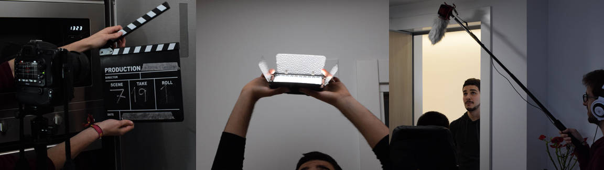

Turn on the lights (Encén els llums)

Context:
Multimedia production (3rd grade)
Technologies:
Video, Audio, Adobe Premiere Pro, Adobe After Effects
Description:
This project consisted in the production of a short film throughout its development with a team of 5 people distributed by roles. My specific role was Producer and my main functions consisted of planning the stages and dates, contacting and assisting the actors and people outside the team, finding suitable locations for the shooting and supervising the whole preproduction, production and post-production process. In addition, I also helped with the writing of the script, casting, recording and editing.
This project showed us the great work behind an audiovisual production and helped us improve our teamwork skills. Regarding to the technical skills, I put in practice high quality video edition tools using Adobe Premiere Pro and Adobe After Effects.
You can watch the final short film on this YouTube link (it was produced and filmed in Catalan language).